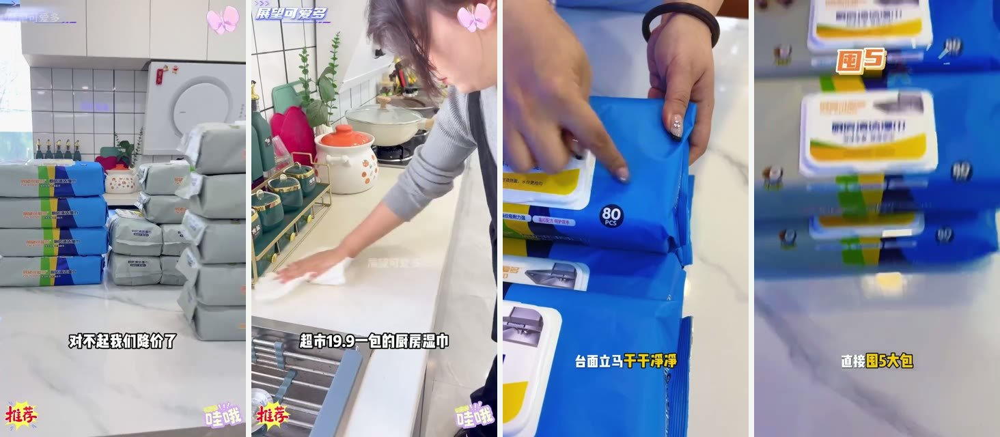
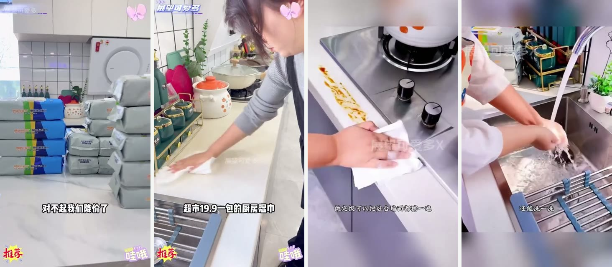
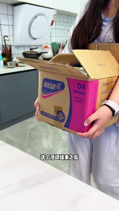
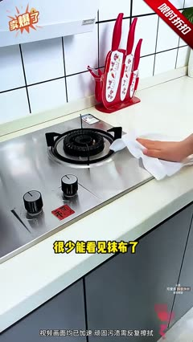
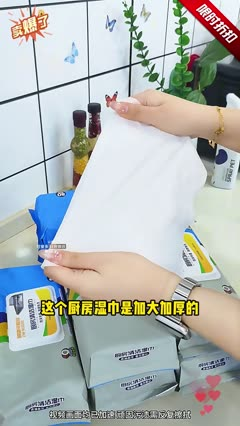

展望从第三到第一，靠什么超过了贝拉？
上期排在展望前面的两家，这期都少卖了一档。 展望两期都在 100万–250万元档，同时增加了关联商品、视频和直播。现有数据足以解释名次怎样换位，展望自己的成交额在档内涨了多少，还没有精确值。
| 品牌 | 名次 | 关联商品 | 关联达人 | 关联视频 | 关联直播 |
|---|
| 展望可爱多 | 3 → 1 | 18 → 21 | 165 → 189 | 675 → 837 | 304 → 404 |
|---|
| 贝拉安徒生 | 1 → 2 | 16 → 16 | 1,413 → 1,202 | 2,483 → 2,123 | 1,119 → 1,070 |
|---|
| 布素朵 | 2 → 3 | 9 → 9 | 110 → 134 | 789 → 1,456 | 172 → 230 |
|---|
| 德佑 | 17 → 9 | 10 → 13 | 238 → 145 | 465 → 350 | 43 → 65 |
|---|
本期冠亚军都在 100万–250万元档。蝉妈妈给出的销售额指数，展望为 275,764，贝拉为 264,911。平台用指数区分同档高低，不能用指数差推算两家相差多少元或增幅多少。
蝉妈妈「厨房湿巾」品牌销售额榜。箭头左侧为 9/19–10/18，右侧为 10/19–11/17。关联数是各期总数，增减是净变化。两期完整榜单与原图
展望的 80 抽主推款，主要靠旗舰店自播成交
展望从第三升至第一，同期贝拉安徒生、布素朵的销售额各下移一档。再看展望自己怎么卖：80 抽主推链接有 82.94% 的销量来自直播，这条链接的直播销售额全部由旗舰店账号贡献。店号广告里可以看到“周年庆福利”这样的促成交素材。
品牌层面，商家号卖得更多
3 个商家号的直播销售额为 50万–100万元，视频销售额为 25万–50万元。209 个达人号对应的两项分别为 2.5万–5万元、5万–10万元。旗舰店直播主推的是这条 80 抽链接
旗舰店 22 场直播中有 17 场讲解这款。它贡献了该账号直播销售额的 73.80%，该链接的全网直播销售额也全部来自这个账号。这条链接每卖出 100 件，约 83 件来自直播
按销量计，直播占 82.94%，视频占 2.10%，商品卡占 14.96%。直播渠道列出的商家号是可爱多洗护清洁旗舰店。店号用周年庆福利给观众一个购买理由
画面中能看到“周年庆福利”。8/24–11/21 店号共监测到 4,395 条广告，预估曝光 457.5 万次；账号合计点赞 4,273、评论 277、分享 300、收藏 1,459。
品牌榜统计期为 10/19–11/17。前三张图是 10/23–11/21 的蝉妈妈数据，第四张是 8/24–11/21 的店号广告样本。它们说明了主推款靠谁卖、店号怎样做促销；机制类素材对排名提升的具体贡献，现有数据无法单独算出。
德佑的取舍。我们在促成交的机制类素材上已有积累。这次值得借的是把同一个活动讲透：视频里说清福利，进直播间就能找到对应的规格和优惠。本轮沿用已有促销打法，把新增拍摄精力放在清洁效果实拍和拉新上。
展望的成交高峰在 10 月 22 日。哪些素材对得上？
强力去油款单日销售额约从 10/22 的 9 万元 回到 10/25 的 1.3 万元，11/8 约 2.8 万元。按图上纵轴估读。
先对商品。 11/19 留存的近 30 天商品榜里，强力去油款关联 52 位达人、317 条视频，商品卡销量 5,000–1 万件。另一条80 抽实惠款关联 1 位达人、34 条视频，商品卡销量 1,000–2,500 件。两条都在 50万–100万元档，各有销售基础，前一款的达人覆盖更广。商品榜和上方品牌榜取数日期不同。
再对日期。 飞瓜样本里，10/21 发布的一条强力款广告预估曝光 402 次、销售额 0–250 元。10/22 凌晨另两条同商品名广告各曝光 62 次，预估销售额均为 0。当天曝光 8,681 次的「给爸妈买」挂的是另一条 80 抽商品。这几条已查到的广告解释不了强力款当天约 9 万元的销售高峰。 要定位当天的主要来源，还缺这条链接在 10/22 的商品卡成交、各直播场成交，以及往期作品当天带来的成交。
实际起量的作品在这里
飞瓜 10/18–11/16 的导出中，展望有 363 条厨房湿巾广告，357 条由品牌自营账号推广，265 条标有直播引流。下表的曝光和销售额均为飞瓜预估，互动顺序为赞、评、转、藏。
| 作品／原片 | 广告类型 | 预估曝光 | 赞 / 评 / 转 / 藏 | 预估销售额 |
|---|
| 10/22 · 给爸妈买 ↗ | 商品＋直播引流 | 8,681 | 6 / 0 / 0 / 4 | 1,000–2,500 元 |
|---|
| 10/26 · 加大加厚去油 ↗ | 通用广告 | 26,204 | 15 / 2 / 0 / 6 | 未披露 |
|---|
| 10/27 · 大扫除／给爸妈买 ↗ | 商品＋直播引流 | 10,342 | 4 / 0 / 0 / 1 | 1,000–2,500 元 |
|---|
| 10/28 · 强力去油款 ↗ | 商品＋直播引流 | 12,297 | 20 / 2 / 1 / 2 | 250–500 元 |
|---|
| 10/29 · 加大加厚去油 ↗ | 直播引流广告 | 23,631 | 17 / 2 / 0 / 5 | 未披露 |
|---|
| 11/08 · 家里经常做饭 ↗ | 直播引流广告 | 19,269 | 14 / 3 / 0 / 3 | 未披露 |
|---|
10/26 和 10/29 两条曝光居该品牌样本前两位，发布时间都晚于 10/22。11/8 的作品沿用了蓝灰包装降价开场和擦柜门的镜头，预估曝光 19,269 次。它与次峰同日，但推广商品只写了“厨房湿巾”。363 条中有 329 条未披露销售额，不能按零算。
并排看曝光最高的两条：同一段开头，后半段怎么改？
两条在 0.2 至 17 秒抽看的八个时点画面一致。蓝灰包装堆叠开场，约 5 秒擦台面、11 秒擦柜门、14 秒挤液，随后继续实擦。每行四帧依次取自 0.2、5、29、41 秒。
10/26 · 通用广告预估曝光 26,204 次
约 20 秒后重新讲促销，展示橱柜、碗盘和调味瓶，约 41 秒强调囤五包。
播放这条约 46 秒的原片

约 20 秒后演示电饭煲外壳、灶面、灶边油污，结尾回到包装。
播放这条约 46 秒的原片
可借的是拍好一段实擦母片，再按目的改后半段。两条素材的消耗和进房数未披露，剪法对成交的影响仍要用德佑自己的对照场次验证。
看一组可复用的测试：同商品、同标题、同秒发的五条，哪条值得复拍？
10/28 00:36:22，同一旗舰店发布了五条强力款广告。预估曝光分别为 12,297、1,025、214、149、48。前两条预估销售额同在 250–500 元档，后三条为 0。选引流母片时，先看进房和同款支付；仅凭曝光，第一条会被高估。五条的投放金额、进房和逐镜差异均待核。
再看一条 80 抽自营片：开箱和实擦怎样剪成进房预告？

2.7 秒 · 开箱
12 秒 · 擦灶面
20.2 秒 · 展开单张这条 10/27 作品先用折扣和开箱展示分量，约第 11 秒才切到擦灶。给德佑拍两版，A 版第一秒拍灶边油圈，B 版先打开 40 抽包装。两版共用同一段原速实擦、同一个直播入口，片尾请观众进房看主播把另一半擦完。编导按首次进房和停留选版本。
播放报告里的 23 秒原片
贝拉掉在哪里？六包款的销售高峰和达人覆盖同时回落
先看量从哪天掉。 威猛企鹅 6 包 480 抽在 10/16、10/17 连续两天日销 10万–25万元。10/19–11/13 有记录的 26 天里，21 天日销 5万–10万元，另 5 天为 2.5万–5万元。双十一当天商品浏览量 12,764，比 10/17 的 36,564 少约 65%，两天页面转化率同在 20%–25% 档。高峰日与双十一当天的差距首先出现在商品到访。
把全部可见日期算进去，前 4 天日浏览量中位数约 2.64 万，后 26 天为 1.31 万，相差约 50%。后 26 天有 20 天的转化率仍在 20%–25% 档。11/13 单日浏览量异常升至 167.23 万、转化落到 0%–5%，典型日到访收缩和个别进来却不买的流量要分开看。
再看供给有没有断。 品牌关联商品仍为 16 条，关联达人减少 211 位、视频减少 360 条、直播减少 49 场。10/23 舒言家仍有一条六包款视频，飞瓜预估曝光 767,450 次、销售额 5万–10万元，赞 433、评 5、转 40、藏 209。贝拉本期仍能跑出高成交作品，但六包款在已覆盖的日期里没有再现上期日销高点。查看舒言家作品 ↗
高成交作品都在上期吗？把同一个达人卖同款的三条片放在一起
同一张蝉妈妈商品视频表统计 10/15–11/13。本期新发的两条片，本品成交档位均高于 10/16 作品。把贝拉掉榜归因于“爆片都在上期”，与这组同作者、同商品的记录不符。表按作品汇总，无法把每笔成交拆回两个排名窗口。
现有日表覆盖 10/15–11/13。判断是老爆款衰减、投放缩量还是竞争变贵，需要把同一商品两期逐日的作品成交、直播成交、投放消耗和千次曝光成本对齐。查看六包款逐日销售档位及原表
德佑从第九冲第一，先补哪一段成交？
31.64 万元德佑本期罗盘成交额
先到 50 万元滚动 30 天还差 18.36 万元，日均多做约 6,120 元
再到 100 万元距本期还差 68.36 万元，日均多做约 22,787 元
本期第三至第五名在 50万–100万元档，冠亚军在 100万–250万元档，上期冠军则在 250万–500万元档。50 万和 100 万用于拆德佑自己的成交目标。每周用同一类目、同一滚动 30 天复核名次，超过当期第一名才算登顶。
先算商城能补多少。 推荐磨砂款本期商品卡有 30,657 次点击、2,296 单、成交 53,665.70 元。保持本期点击量和每单 23.37 元，只把点击成交率从 7.49% 恢复到上期 8.43%，约多 288 单、0.67 万元，只填得上第一阶段缺口的约 3.7%。这是试算。要跨过 50 万元，还得靠新的有效进房、直播成交和达人同款订单。
| 岗位与目标 | 首轮怎么做 | 看什么决定下一步 |
|---|
| 达人 · 拿到能复拍的素材 | 先找有同类实拍和同品成交记录的作者，发同款试用包和一段可参考的灶台实擦。约定素材授权，收回原片和买家真实提问。 | 商务逐周看签约后发片率、授权可复拍条数及同款支付。能连续出单的作者优先排复拍。 |
|---|
| 自营短视频 · 送新人进房 | 编导首轮只换开头：灶边油圈近景对包装开场。中段和结尾共用同一轮实擦，投手在相近人群、时段和预算下对照。 | 3 秒、5 秒留存判断开头；每千次曝光首次进房数、进房后停留决定哪版进下一轮。 |
|---|
| 直播间 · 接住短视频承诺 | 先用官方升级款 40 抽 × 3 包。三场本品共 383 单，其中三包款 217 单、10,070.18 元。主播接着擦视频里留的半边，讲清抽数、包数、到手价。 | 同款进房后停留、点击、支付分场记录。进房涨而支付弱，先查有没有演到承诺的那一轮、挂的规格是否一致。 |
|---|
| 商城 · 承接搜索和商品卡 | 洗护清洁旗舰店的推荐磨砂款单独对照。让用户从搜索结果认出视频同款，首图与默认包数逐项单测。 | 对同款看商品卡点击成交率、支付单数、错选规格退款。按实际入口核对，避免把同一笔订单重复计给达人和商城。 |
|---|
投手和运营共同决定何时放量。 开头测出后固定下来，下一轮只换后半段，比较连续擦两种油污和留半边引导进房两种拍法。投手记录付费首次进房成本，运营核同款支付和退款后贡献。同一拍法在可比场次重复带来新客进房和支付、每单广告费也在财务上限内，再安排达人复拍并加投。每周按渠道去重汇总成交，重算离 50 万、100 万及当期冠军的差距。
下载两期排名、商品快照、飞瓜素材明细及贝拉日表
德佑从第17名升到第9名，销售额从10万–25万元档升到25万–50万元档。我们的后台记录是从18.35万元卖到31.64万元。表里比较各品牌，用蝉妈妈的估算范围。下面看德佑自己哪里卖得好，用企业版罗盘的成交数据。